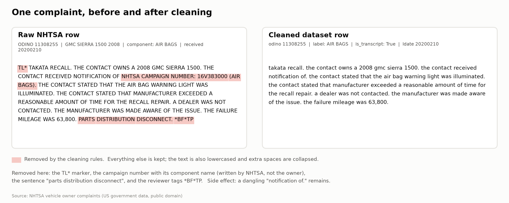
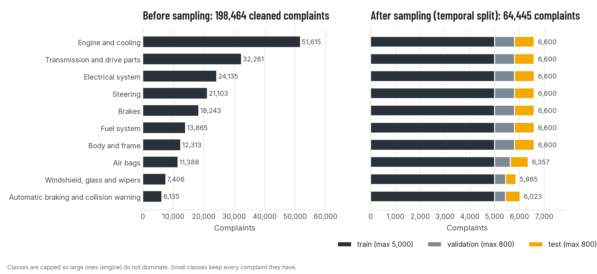

From file to dataset in five steps
- 1
Raw file
629,231 rows432,893 complaints, January 2020 to the start of November 2026 - 2
Label
10 classes304,879 complaints have one component group; 229,063 fall in the 10 classes - 3
Clean
198,503after stripping leaks and dropping 10,295 no-failure calls, 1,690 duplicates and 18,575 short texts - 4
Split
64,445in the time-based sample: 50,000 train, 7,125 validation, 7,320 test - 5
Score
7,320test complaints scored once per model

Where the data comes from
NHTSA's Office of Defects Investigation publishes every vehicle owner complaint as a tab-separated file with 51 fields per row. The files are on NHTSA's datasets page, and the field dictionary is here. We used the two most recent chunks, COMPLAINTS_RECEIVED_2020-2024 and COMPLAINTS_RECEIVED_2025-2026. Together they hold 629,231 rows for 432,893 complaints, received from January 2020 to the start of November 2026. There are more rows than complaints because a complaint that lists several components gets one row per component. The data is US government data and is public.
The fields we keep
| Raw field | Meaning | Published column |
|---|---|---|
ODINO | Complaint reference number. Repeats when a complaint lists several components. | odino |
MAKETXT, MODELTXT, YEARTXT | Vehicle make, model and model year. | make, model, year (shown, not used as model input) |
COMPDESC | NHTSA's component description, for example SERVICE BRAKES, HYDRAULIC: FOUNDATION COMPONENTS. | label (the part before the first colon or comma) |
LDATE | Date NHTSA received the complaint (YYYYMMDD). | ldate, used for the time-based split |
CDESCR | The complaint text. | text, the only model input |
| (derived) | True when the text was written down by NHTSA call-centre staff. | is_transcript |
| (derived) | train, val or test. | split |
Labels: which part failed
The label is the first part of NHTSA's component description: the text before the first colon, then before the first comma. For example, SERVICE BRAKES, HYDRAULIC: FOUNDATION COMPONENTS becomes SERVICE BRAKES. We chose 10 groups with enough complaints to train and test on. All other labels are dropped, including UNKNOWN OR OTHER, TIRES, SEATS and EXTERIOR LIGHTING.
| Label (NHTSA component group) | Plain name | Cleaned complaints |
|---|---|---|
ENGINE | Engine and cooling | 51,615 |
POWER TRAIN | Transmission and drive parts | 32,261 |
ELECTRICAL SYSTEM | Electrical system | 24,135 |
STEERING | Steering | 21,103 |
SERVICE BRAKES | Brakes | 18,242 |
AIR BAGS | Air bags | 11,387 |
STRUCTURE | Body and frame | 12,313 |
FUEL/PROPULSION SYSTEM | Fuel system | 13,865 |
VISIBILITY/WIPER | Windshield, glass and wipers | 7,406 |
FORWARD COLLISION AVOIDANCE | Automatic braking and collision warning | 6,135 |
Merged labels
NHTSA renamed some groups over time, so two pairs of labels name the same parts. We merged ENGINE AND ENGINE COOLING into ENGINE and FUEL SYSTEM into FUEL/PROPULSION SYSTEM before any other step. We did not merge VISIBILITY into VISIBILITY/WIPER. Both labels were used through the whole period and they cover different parts (sunroof, windshield, glass and mirrors on one side, wipers on the other), so we dropped VISIBILITY.
The multi-component rule
31.9% of complaints (138,213) have rows for more than one component. After the merges above, 128,014 complaints (29.6%) map to more than one top-level label. We keep only complaints whose rows all map to exactly one label, which leaves 304,879. Of those, 229,063 fall in the 10 classes. This keeps every label clean, and it also means our results say nothing about complaints that span several parts.
Cleaning the text
The cleaning is light on purpose. We lowercase the text, collapse spaces, and remove text that NHTSA staff or forms added, not the owner. The rules run in the order below. After them we drop exact duplicate texts (1,690) and texts under 20 words (18,575).
| # | Rule (applied in this order) | Texts changed | Example, before and after |
|---|---|---|---|
| 1 | Remove reviewer tags at the end of a text (such as *TR or *JB) that NHTSA staff leave. | 5,266 | ...BER IS NOT INCLUDED. THEY SHOULD EXTEND THE VIN'S TO ALL 2018 MODELS. *TR...→ ...BER IS NOT INCLUDED. THEY SHOULD EXTEND THE VIN'S TO ALL 2018 MODELS.... |
| 2 | Make the text lowercase. | 227,721 | ...THE LIGHTS ALL CAME ON ABS SYSTEM CAME ON STABILIZER AIR BAG TOOK TO LEXUS THEY DIAGNOSED...→ ...the lights all came on abs system came on stabilizer air bag took to ... |
| 3 | Collapse runs of spaces into one space. | 124,563 | ...ander, 2009-2010 tacoma, 2006-2008 rav4 and 2006-2010 yaris vehicles. my 2009 tundra crewmax that i just bought has this problem and has had it for two years acc...→ ...ander, 2009-2010 tacoma, 2006-2008 rav4 and 2006-2010 yaris vehicles. my 2009 tundra crewmax that i just bought has this problem and has had... |
| 4 | Remove the TL* marker at the start of call-centre texts. The text is first flagged with is_transcript. | 8,249 | ...tl* the contact owns a 2015 jeep grand cherokee. the contact received notification of nhtsa cam...→ ...the contact owns a 2015 jeep grand cherokee. the contact received notif... |
| 5 | Remove the sentence NHTSA adds when it hides personal details (FOIA redaction text), including cut-off versions. | 6,759 | ... ended very badly if flywheel would have went to pieces while driving. information redacted pursuant to the freedom of information act (foia), 5 u.s.c. 552(b)(6)....→ ... ended very badly if flywheel would have went to pieces while driving.... |
| 6 | Remove sentences that mention the dealer “VIN tool”. | 8,521 | ...urer was not made aware of the issue. the failure mileage was unknown. vin tool confirms parts not available....→ ...urer was not made aware of the issue. the failure mileage was unknown.... |
| 7 | Remove “NHTSA campaign number: ID” and the component name in parentheses after it. Leaves stubs such as “notification of;”. | 27,424 | ...d. after investigating the failure, the contact related the failure to nhtsa campaign number: 25v274000 (engine and engine cooling), but the vin was not included. the manufacturer was notified of the failure, a case was o...→ ...d. after investigating the failure, the contact related the failure to, but the vin was not included. the manufacturer was notified of the f... |
| 8 | Remove any other parenthesized text that equals an NHTSA component name. | 930 | ...he contact found information on tsb: eng222, nhtsa id number: 11014912 (engine), which was related to the failure. the manufacturer was informed of the failure, then ope...→ ...he contact found information on tsb: eng222, nhtsa id number: 11014912, which was related to the failure. the manufacturer was informed of t... |
| 9 | Remove standalone recall IDs such as 19v757000. The word “recall” stays. | 4,188 | ...ly. the vehicle was being repaired. the vehicle was not included in or 19v075000. the manufacturer was made aware of the failure. the failure mileage was approximately 12...→ ...ly. the vehicle was being repaired. the vehicle was not included in or. the manufacturer was made aware of the failure. the failure mileage ... |
| 10 | Collapse spaces again. | 22 | n/a |
| 11 | Drop the whole complaint if it says the contact had not experienced a failure (recall-availability calls). | 10,295 | ...ontact stated that the manufacturer had exceeded a reasonable amount of time for the recall repair. the manufacturer was made aware of the issue. the contact had not experienced a failure....→ ...[whole complaint dropped]... |
| 12 | Remove the template phrase “parts distribution disconnect” and keep the rest. | 1,078 | ...notified of the failure. the failure mileage was approximately 53,000. parts distribution disconnect....→ ...notified of the failure. the failure mileage was approximately 53,000.... |
| 13 | Collapse spaces again. | 0 | n/a |
| 14 | Mask contact details typed into the text: phone numbers, e-mail addresses, VIN-like strings, street addresses and URLs become [PHONE], [EMAIL], [VIN], [ADDRESS] and [URL]. | 7,497 | n/a |
The funnel: 629,231 rows, 432,893 complaints, 304,879 with one label, 229,063 in the 10 classes, minus 10,295 complaints reporting no failure, 1,690 duplicates and 18,575 short texts, leaves 198,503 cleaned complaints.

Leakage audit
A model can score well for the wrong reason if the text contains the answer. We checked for this before training. For each class we listed the words and word pairs that most strongly point to it, and we looked for terms that appear almost only in one class.
The audit found a leak. NHTSA call-centre staff often write a sentence such as “the contact received notification of NHTSA campaign number: 19V757000 (ENGINE AND ENGINE COOLING)”. The component name in parentheses is the label itself. Rule 7 removed this phrase from 27,424 texts, which is 12.0% of the 229,063 complaints in the 10 classes. The table shows how clearly it showed up: a word pair such as ( air appeared in 3,601 texts, and 3,554 of them were air bag complaints.
| Term in the text | Class where it appears most | Texts in that class | Texts with the term | Share |
|---|---|---|---|---|
( engine | ENGINE | 5,061 | 5,165 | 98.0% |
( air | AIR BAGS | 3,554 | 3,601 | 98.7% |
bags ) | AIR BAGS | 3,501 | 3,556 | 98.5% |
( service | SERVICE BRAKES | 3,369 | 3,554 | 94.8% |
hydraulic ) | SERVICE BRAKES | 3,174 | 3,262 | 97.3% |
( fuel | FUEL/PROPULSION SYSTEM | 3,532 | 3,655 | 96.6% |
We removed the phrase, any other parenthesized component name, and standalone recall IDs. We also removed two kinds of boilerplate that mark particular call types: the “VIN tool” sentences and the FOIA redaction text. A different problem was complaints that are not failure reports at all. Some call-centre texts say that the contact “had not experienced a failure” and only ask about a recall repair that is waiting for parts. Rule 11 dropped 10,295 of them.
After stripping, the audit finds 0 texts with a parenthesized component name. It still finds 1,835 texts that mention an NHTSA campaign or recall in the owner's own words, 6 malformed recall IDs and 18 texts with a cut-off FOIA sentence. The full audit is in results/leakage_audit.txt.
Splits and sampling
The main split is by time, because a real system would sort complaints that arrive after the ones it learned from. Training complaints were received before 1 November 2025, validation complaints from 1 November 2025 to 30 April 2026, and test complaints from 1 May to 31 October 2026. We left out the 102 complaints received on 1 November 2026, because that month was only one day long in the file. Each class is capped at 5,000 training complaints and 800 validation and 800 test complaints, chosen at random with seed 42. Classes with fewer complaints keep all of them: air bags, forward collision avoidance and windshield and wipers fall below the cap in validation and test.
The comparison split is a stratified random 80/10/10 split from the same cleaned pool, with the same caps. We used it for all three models to measure how much a random split overstates the score compared with the time-based split. In the random split, the train, validation and test sets are not separated by time, so complaints about the same recall can land on both sides.
| Class | Temporal train | Temporal val | Temporal test | Random train | Random val | Random test |
|---|---|---|---|---|---|---|
| Engine and cooling | 5,000 | 800 | 800 | 5,000 | 800 | 800 |
| Transmission and drive parts | 5,000 | 800 | 800 | 5,000 | 800 | 800 |
| Electrical system | 5,000 | 800 | 800 | 5,000 | 800 | 800 |
| Steering | 5,000 | 800 | 800 | 5,000 | 800 | 800 |
| Brakes | 5,000 | 800 | 800 | 5,000 | 800 | 800 |
| Air bags | 5,000 | 636 | 721 | 5,000 | 800 | 800 |
| Body and frame | 5,000 | 800 | 800 | 5,000 | 800 | 800 |
| Fuel system | 5,000 | 800 | 800 | 5,000 | 800 | 800 |
| Windshield, glass and wipers | 5,000 | 446 | 419 | 5,000 | 741 | 740 |
| Automatic braking and collision warning | 5,000 | 443 | 580 | 4,908 | 614 | 613 |
| Total | 50,000 | 7,125 | 7,320 | 49,908 | 7,755 | 7,753 |

Get the data and the code
- complaints_temporal.csv (main split) and complaints_random.csv (comparison split), with columns
odino, ldate, make, model, year, label, text, is_transcript, split. - Scripts: 01_download.py, 02_explore.py, 03_clean_and_label.py, 04_split_and_sample.py.
- Raw source: 2020 to 2024, 2025 to 2026, and the field dictionary.